Birmingham Travel Guide
Historic industrial city known for its pivotal role in the American civil rights movement, acclaimed culinary scene, and revitalized downtown entertainment districts.
Places to See in Birmingham
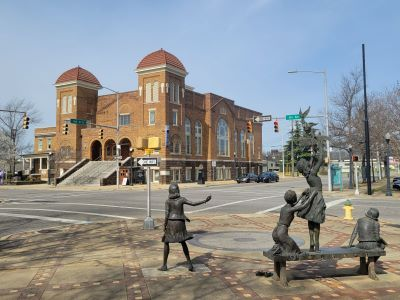
Dough4872, CC BY-SA 4.0, via Wikimedia Commons; Image Size Adjusted

16th Street Baptist Church
Historic church and civil rights landmark offering guided tours, worship services, and exhibits commemorating pivotal events in American history.
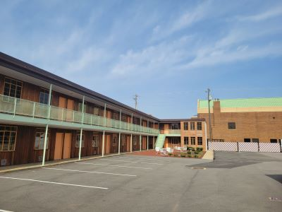
Dough4872, CC BY-SA 4.0, via Wikimedia Commons; Image Size Adjusted
AG Gaston Motel
Historic mid-century motel that served as a strategic headquarters during the Civil Rights Movement and now stands as a preserved national monument.

Dough4872, CC BY-SA 4.0, via Wikimedia Commons; Image Size Adjusted
Arlington Antebellum Home and Gardens
Greek Revival mansion and decorative arts museum set on six landscaped acres, offering guided tours and cultural events in a historic Southern setting.
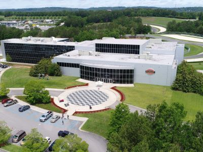
Dough4872, CC BY-SA 4.0, via Wikimedia Commons; Image Size Adjusted
Barber Vintage Motorsports Museum
World-renowned museum showcasing the largest collection of vintage motorcycles and Lotus race cars in a modern, multi-level facility.
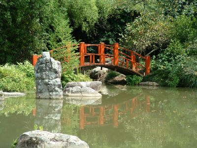
Dough4872, CC BY-SA 4.0, via Wikimedia Commons; Image Size Adjusted
Birmingham Botanic Gardens
Expansive public garden featuring themed landscapes, native plant collections, and educational programs across 67 acres of curated natural beauty.
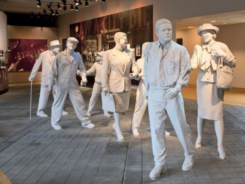
Dough4872, CC BY-SA 4.0, via Wikimedia Commons; Image Size Adjusted
Birmingham Civil Rights Institute
Smithsonian-affiliated museum chronicling the American Civil Rights Movement through immersive exhibits, historic artifacts, and educational programming.
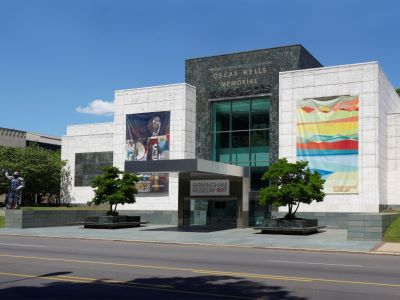
Dough4872, CC BY-SA 4.0, via Wikimedia Commons; Image Size Adjusted
Birmingham Museum of Art
Downtown cultural institution housing over 27,000 artworks from around the world, with free admission and rotating exhibitions year-round.
Dough4872, CC BY-SA 4.0, via Wikimedia Commons; Image Size Adjusted
Boutwell Auditorium
Historic multi-purpose civic venue offering concerts, sporting events, and community gatherings in a downtown Birmingham landmark.

Dough4872, CC BY-SA 4.0, via Wikimedia Commons; Image Size Adjusted
East Lake Park
Historic urban park featuring a 45-acre lake, birding trails, and recreational amenities within a 100-acre green space.
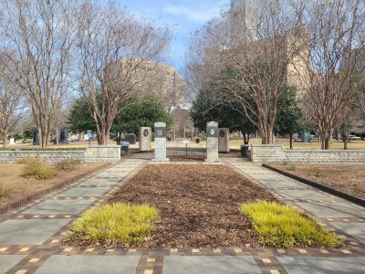
Dough4872, CC BY-SA 4.0, via Wikimedia Commons; Image Size Adjusted
Kelly Ingram Park
Four-acre public park featuring powerful civil rights sculptures, walking paths, and historical markers in the heart of Birmingham’s Civil Rights District.
Dough4872, CC BY-SA 4.0, via Wikimedia Commons; Image Size Adjusted
Linn Park
Downtown civic green space featuring fountains, monuments, and event lawns surrounded by Birmingham’s cultural and government landmarks.
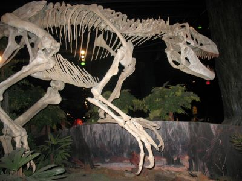
Dough4872, CC BY-SA 4.0, via Wikimedia Commons; Image Size Adjusted
McWane Science Center
Four-story science museum featuring interactive exhibits, an aquarium, a collection of natural history specimens, and a giant dome theater designed to inspire curiosity through hands-on learning.
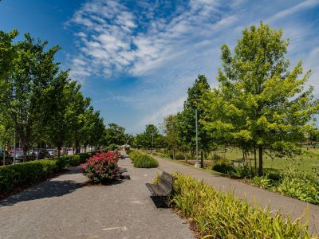
Dough4872, CC BY-SA 4.0, via Wikimedia Commons; Image Size Adjusted
Railroad Park Foundation
Urban green space blending industrial heritage with modern design, offering trails, water features, and community events across 19 acres.

Dough4872, CC BY-SA 4.0, via Wikimedia Commons; Image Size Adjusted
Red Mountain Park
Expansive urban forest offering hiking trails, historic mining sites, scenic overlooks, and a dedicated off-leash dog park across 1,500 wooded acres.
Dough4872, CC BY-SA 4.0, via Wikimedia Commons; Image Size Adjusted
Ruffner Mountain
Urban nature preserve offering scenic trails, native wildlife exhibits, and panoramic overlooks across more than 1,000 acres of protected forest.
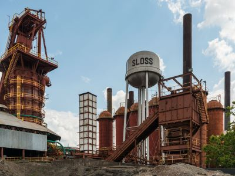
Dough4872, CC BY-SA 4.0, via Wikimedia Commons; Image Size Adjusted
Sloss Furnaces National Historic Landmark
Former industrial blast furnace site transformed into a museum and cultural venue preserving Birmingham’s iron-making legacy through tours, exhibits, and events.
Dough4872, CC BY-SA 4.0, via Wikimedia Commons; Image Size Adjusted
Southern Museum of Flight
Aviation museum featuring over 100 historic aircraft, immersive exhibits, and flight simulators celebrating the history of flight in the Southeast.
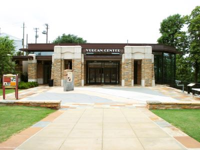
Dough4872, CC BY-SA 4.0, via Wikimedia Commons; Image Size Adjusted
Vulcan Park and Museum
Hilltop park and museum featuring the world’s largest cast iron statue, panoramic city views, and exhibits on Birmingham’s industrial history.
Overview
Birmingham is the largest city in Alabama, in the north-central part of the state at the southern end of the Appalachian foothills. Nicknamed the "Magic City" because of its rapid growth, it was built on iron, coal, and limestone and became the leading steel-making center of the South. It is also famous as one of the most important battlegrounds of the civil rights movement, and today it is a center for healthcare, banking, and research, with a growing food scene.
Visitors come to Birmingham for its civil rights sites, including the Birmingham Civil Rights Institute, the 16th Street Baptist Church, and Kelly Ingram Park. They also come for the Vulcan statue, the industrial history of Sloss Furnaces, the Birmingham Museum of Art, and the city's acclaimed restaurants, and it is close to Talladega Superspeedway and the mountains of north Alabama.
History
Birmingham was founded in 1871 at the intersection of two railroads, in the middle of a valley rich in the three ingredients of steel, and named for Birmingham, England, the industrial city. The city grew rapidly in the late nineteenth and early twentieth centuries as furnaces, mills, and foundries were built, and it became known as the "Pittsburgh of the South." In 1963, the city was the site of major civil rights demonstrations led by Dr. Martin Luther King Jr., who wrote his "Letter from Birmingham Jail" during the campaign, and the bombing of the 16th Street Baptist Church that September killed four girls. As the steel industry declined, the city diversified, and the University of Alabama at Birmingham (UAB) became one of the state's largest employers.
Sightseeing and Popular Landmarks
Vulcan Park is home to the 56-foot cast-iron statue of Vulcan, the Roman god of the forge, which is the largest cast-iron statue in the world and has an observation deck with views of the city. Sloss Furnaces is a preserved blast furnace complex that is now a museum and concert venue, and Railroad Park is a downtown green space with a skyline view. The Kelly Ingram Park, the 16th Street Baptist Church, and the A.G. Gaston Motel are part of the Birmingham Civil Rights National Monument, and the Boutwell Auditorium and Arlington are other landmarks.
Culture and Museums
The Birmingham Civil Rights Institute tells the story of the movement through immersive exhibits, and the Birmingham Museum of Art, with free admission, has the largest art collection in the Southeast. The Barber Vintage Motorsports Museum has the largest collection of motorcycles in the world, and the Southern Museum of Flight and the McWane Science Center are popular with families. The Alabama Theatre, the Birmingham Symphony Orchestra, and the Saturn music venue are part of the performing arts scene.
Parks
Birmingham has a number of parks and green spaces. Red Mountain Park is one of the largest urban parks in the country, with trails and zip lines in former iron ore mines, and Ruffner Mountain is a nature preserve with hiking trails. The Birmingham Botanical Gardens has free admission and a large collection of plants, and Linn Park and East Lake Park offer recreation. Oak Mountain State Park, the largest state park in Alabama, is about 20 miles south.
Seasons and Weather
Birmingham has a humid subtropical climate. Summers are hot and humid, with highs in the 90s°F, and winters are mild, with highs in the 50s°F and little snow, usually only a few inches a year. Spring and fall are the most pleasant seasons, though severe thunderstorms and tornadoes are possible, especially in spring, and the city sees about 55 inches of rain annually.
This article uses material from Wikipedia as well as information from official tourism and institutional sources. Key references include Visit Birmingham, Birmingham Civil Rights Institute, Birmingham Museum of Art, Vulcan Park and Museum, National Park Service Birmingham Civil Rights National Monument, and National Weather Service Birmingham. Wikipedia material is from the article "Birmingham, Alabama", and is available under the Creative Commons Attribution-Share-Alike License 3.0.

.jpg){kind=link}
.jpg)